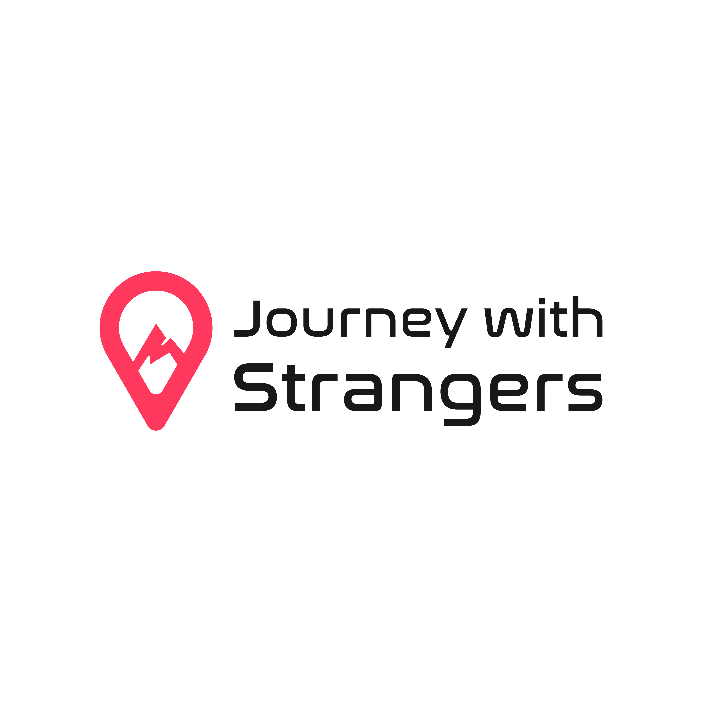
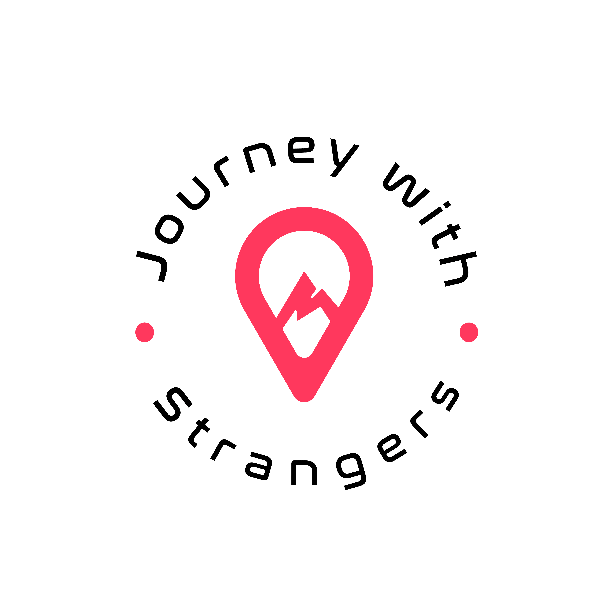
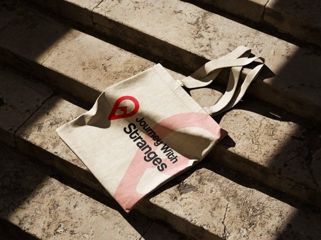
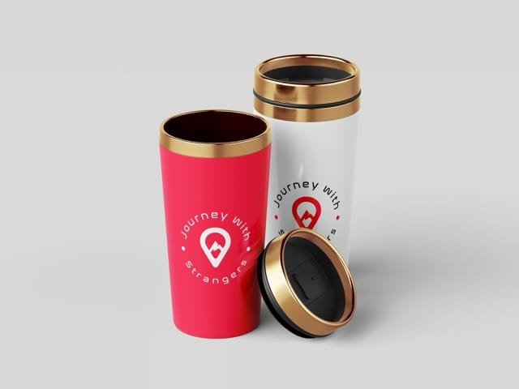
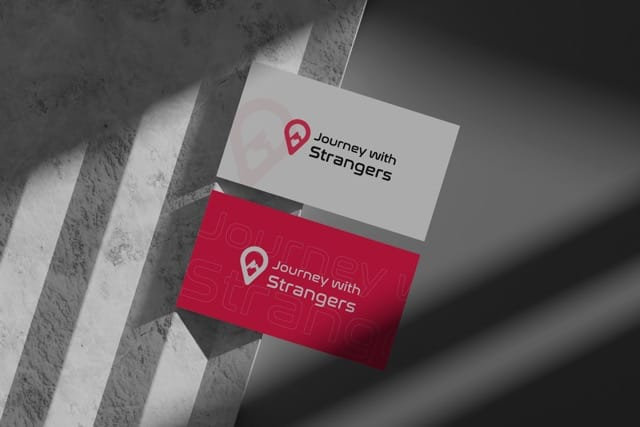

A mountain hidden in a location pin: the emblem for Journey with Strangers.
Journey with Strangers is a travel brand that curates adventurous group experiences like trekking, bonfire nights, and nature getaways for people who want to travel with new faces. I designed its logo around a single emblem that carries adventure, place, and shared experience in one mark.

The brief
Journey with Strangers curates adventurous group experiences like trekking, bonfire nights, and nature getaways, all built so individuals can travel with new people and form real connections. The brand needed a mark that read as modern and iconic on first glance. The goal was a logo that symbolized travel, exploration, and collective experience, combined travel cues with a clean, bold style, and stayed legible from a merchandise tag to a full-screen digital header.


The design solution
The mark places a mountain in the negative space of a location pin. The mountain signifies adventure, nature, and the brand's focus on exploration, while the location pin symbolizes journey, movement, and shared travel experiences. The color system does the emotional work: pink represents vibrancy, connection, and fun for a youthful, curious audience, black adds structure and contrast for professionalism and clarity, and white enhances the balance of the negative space for a clean, adaptable appearance. The composition stays minimal so the emblem scales cleanly and stays instantly recognizable.


How the work moved
The project ran through a defined path: discovery and exploration, concept development, a typography and color system, refinement and adaptation, real-world testing, and scalability and support. That sequence produced an adventure-driven identity that feels youthful and energetic while staying versatile and memorable, giving the brand instant recognition across print, digital, and merchandise.